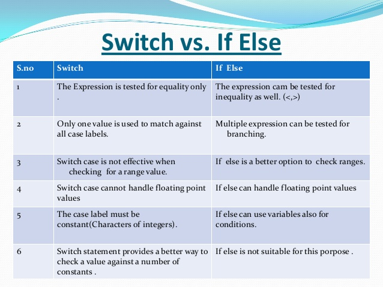

Switch vs If/Else
Advantages of switch over if-else ladder:
(1)A switch statement works much faster than equivalent if-else ladder. It is because compiler generates a jump table for a switch during compilation. Consequently, during execution, instead of checking which case is satisfied, it only decides which case has to be executed.
(2)It is more readable and in compare to if-else statements.
(3)It is more manageable for having higher level of indentation than if.
--------------------------------------------------------------------------------------------
Where to use switch over if-else ladder:
If there are large number of compares for a condition in your program, use switch over if-else ladder. For more complex comparisons.
--------------------------------------------------------------------------------------------
Where to use if-else ladder over switch:
In case of simple and few compares, if-else executes faster and easy write. Thus as per program’s requirement, a programmer should decide himself where to use which one condition control.
